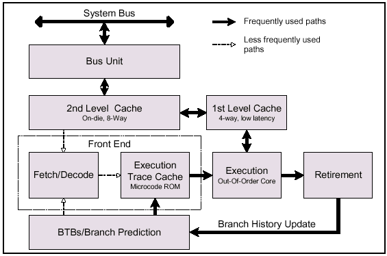

“英特尔 NetBurst(R)”微体系结构提供以下重要的功能：
快速执行引擎：
“算术逻辑单元”(ALU) 以两倍于处理器频率的速度运行。
基本整数运算在 1/2 个处理器时钟周期内完成执行。
提供更高的吞吐量，产生的执行延迟更少。
超级管道技术：
二十阶段式管道为台式个人计算机与服务器提供行业领先的时钟频率。
提供频率发展空间与可伸缩性，利于将来继续保持领先地位。
高级动态执行：
深层无序推测性执行引擎。
随时执行多达 126 条指令。
管道中执行多达 48 条加载指令与 24 条存储指令。
增强的分支预测功能。
降低由于管道更深而产生的预测失误惩罚。
高级分支预测算法。
4K 项分支目标数组。
新的缓存子系统：
一级缓存。
“高级执行跟踪缓存”存储解码的指令。
“执行跟踪缓存”消除主执行循环的解码器延迟。
“执行跟踪缓存”将程序执行流路径集成为一条线。
低延迟数据缓存，仅有 2 个周期的延迟。
二级缓存。
片内集成全速一体化 8 路二级“高级传输缓存”。
带宽与性能随处理器频率而增加。
高性能四泵总线接口连接英特尔 NetBurst 微体系结构系统总线。
支持四泵可伸缩总线时钟取得高达 4X 倍速度。
可以为奔腾(R) 4 处理器提供高达每秒 3.2 GB 的带宽。
超标量发出支持并行化。
扩展的硬件寄存器，带重命名功能，可避免寄存器名称空间限制。
128 字节缓存线大小。
两个 64 字节扇区。
图示：英特尔 NetBurst 微体系结构

此微体系结构管道由三个部分组成：有序发出前端，无序超标量执行核心，有序失效单元。如需有关每个这些管道部分的概述信息，请参阅 IA-32 Intel Architecture Software Developer's Manual （IA-32 英特尔体系结构软件开发人员手册）第 1 卷“基本体系结构”。如需有关信息，请访问在线英特尔(R) 处理器信息。